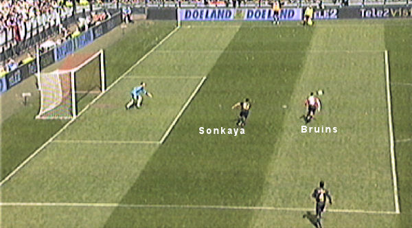

Castro houdt een hard afstandschot van Fer buiten het doel.
De Jong pakt Fer te stevig vast en krijgt daarvoor geel.
Volgende week zullen er beslist meer Rodasupporters zijn.

Na slecht verdedigingswerk van Sonkaya kan Bruins scoren: 1-0, (55').
Janssen speelt de bal; geen strafschop.
Tweede gele kaart voor De Jong wanneer hij De Guzman neerhaalt. Het rood
valt in de 65e minuut.
Sahin scoort een buitenspeldoelpunt: 2-0, (77').
Mols scoort 3-0,(88').
De spelers bedanken de meegereisde supporters.
Foto's vanuit Feyenoord-perspectief
>>>
Volgende week volgt de herkansing in de bekerfinale.